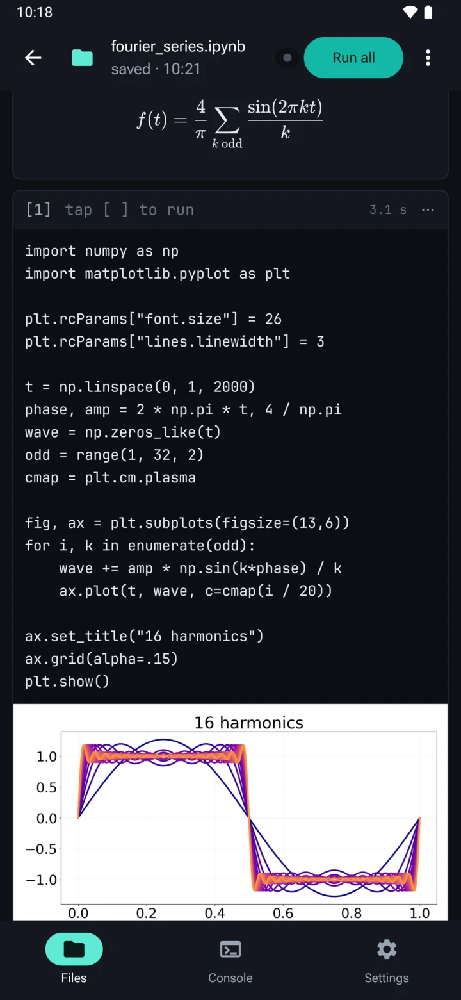

Python IDE for Android · Free on Google Play
Jupyter Notebooks.
In your pocket.
Edit and run .ipynb notebooks and .py scripts right on your phone — no cloud, no account, no internet required. Need more power? Point it at your own Jupyter server.

A real Python IDE — built for touch.
Callisto isn't a code playground. It's a complete editor and runtime, designed from scratch for Android.
On-device by default
CPython 3.10 runs locally via Chaquopy. No server required, no account, no telemetry on your code. Works offline on a plane or a train.
Full notebook support
Open, edit, and save real .ipynb v4 files. Run cell, run below, run all, interrupt a hung run. Markdown renders with KaTeX; Matplotlib figures display inline.
Smart editor
CodeMirror 6 with Python highlighting and Jedi completion from the first letter. It knows names from earlier cells before they've run, and against the live namespace df. resolves to actual DataFrame methods.
Diagnostics as you type
Syntax errors, undefined names and unused imports are underlined as you type, in cells and .py scripts. Each cell is checked against the whole notebook, so a name from an earlier cell isn't flagged.
Scripts & REPL
A .py editor and a Python console live side-by-side with your notebook. Variables flow both ways. Input history persists across sessions.
Workspaces & export
Per-file workspace folders. Sibling data/ directory for CSVs. Export single files or a ZIP bundle. "Open with…" support for both file types.
Live output
Output streams back while the cell is still running — a long training run is a live log, not a spinner. input() and getpass() get a field to answer them.
Remote kernels
Connect any Jupyter server and run the same notebook there — Termux on this phone, a desktop on your Wi-Fi, or a rented GPU box. Setup guides for each are built into the app.
Server files
Browse the server's files, upload and download, pick the folder your code runs in, and open a notebook straight off the box. A run survives a dropped connection.
The full scientific stack — pre-installed.
Callisto ships with the libraries you actually use. No pip install, no broken wheels, no waiting for a manylinux build that doesn't exist on ARM.
The free tier covers the essentials. The one-time Lifetime Unlock adds the rest of the stack, remote kernels and the coding keyboard — no subscription, ever.
Free
Lifetime Unlock
ProFrequently asked questions
Can you run Jupyter notebooks on Android?
Yes. Callisto runs Jupyter notebooks on your Android device using CPython 3.10 — no server, no Google Colab, and no internet connection required. You can run cells individually, run all, and interrupt long-running code. If you would rather use a bigger machine, connecting your own Jupyter server is optional.
How do I open and edit an .ipynb file on my phone?
.ipynb file on my phone?
Install Callisto from Google Play, then open the notebook from your file manager via “Open with…” or from the in-app library. Callisto reads and writes real .ipynb v4 files: edit code and Markdown cells, reorder them, run them, and save back. Code cells are checked as you type — syntax errors, undefined names and unused imports are underlined.
Do I need Termux or a Linux environment to run Python on Android?
No. Callisto is a regular Android app — no Termux, no proot, no pip troubleshooting. Python and the bundled packages ship inside the app and work out of the box.
Does Callisto work offline?
Yes. Editing and execution happen on-device by default, so Callisto works on a plane or without any signal, and there is no account. Connecting to a Jupyter server is the one thing that needs a network — it is optional, off until you set one up, and it is your server, not ours.
Can I run a notebook on a remote Jupyter server?
Yes, from version 1.5.0. Callisto connects to any Jupyter server — Termux on the same phone, a desktop on your Wi-Fi, or a rented GPU box — and runs your notebook there. Output streams back while the code is still running, a run survives a dropped connection, and you can browse, upload and download the server's files. Remote kernels are part of the one-time Lifetime Unlock; on-device execution stays free.
Which Python packages are included?
The free tier bundles numpy, matplotlib, and Pillow. The one-time Lifetime Unlock adds pandas, scikit-learn, scipy, seaborn, statsmodels, sympy, openpyxl, beautifulsoup4, requests, sqlglot, imbalanced-learn, category_encoders, and jinja2 — no subscription.
Is Callisto free?
Callisto is free to install and use with the core stack. A single one-time purchase unlocks the full scientific package set, remote kernels and the coding keyboard — there is no subscription.
Privacy by design.
No account. We never receive your code. Crash diagnostics are anonymous and contain no file contents. Usage analytics are opt-in and off by default. The internet permission covers two things and nothing else: code you write that reaches out (requests), and the Jupyter server you chose to connect to.